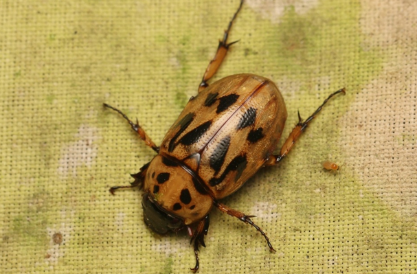

Es un escarabajo perteneciente a la familia Scarabaeidae. Presenta un cuerpo ovalado y robusto, generalmente de coloración marrón o amarillenta, con manchas oscuras en los élitros. Sus adultos pueden ser atraídos por fuentes de luz y se encuentran en diferentes ambientes tropicales. Se ha registrado en Colombia, incluyendo el Valle del Cauca.